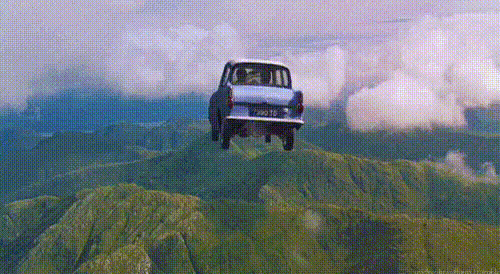

A wild car was seen flying over the muggles world again
Last monday (15) a wild car was, once again, flying over the muggle’s world. We have asked and will ask again, for the people to control their flying cars, we will control the one that was lost to the spiders and has become wild in the forbidden forest aswell, so that problem don’t repeat itself. We all know the consequences that will be brought to us if the muggles find.